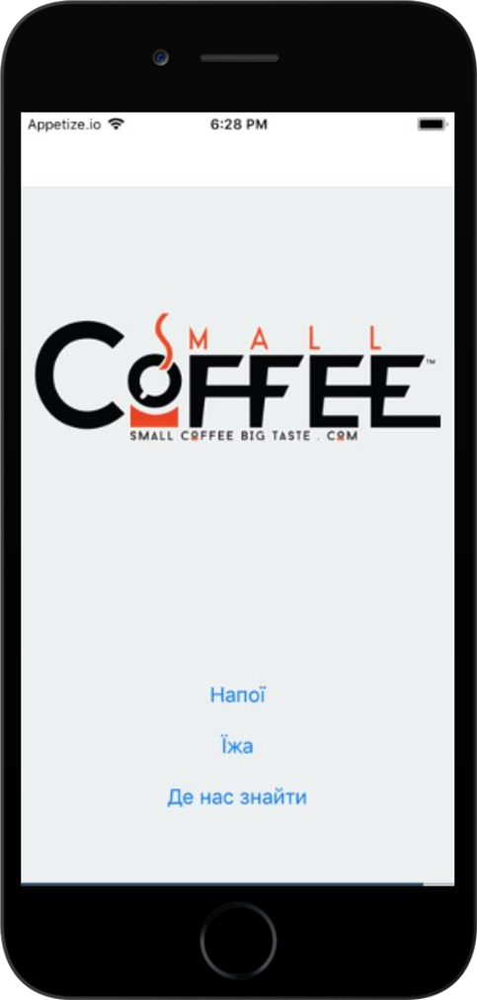
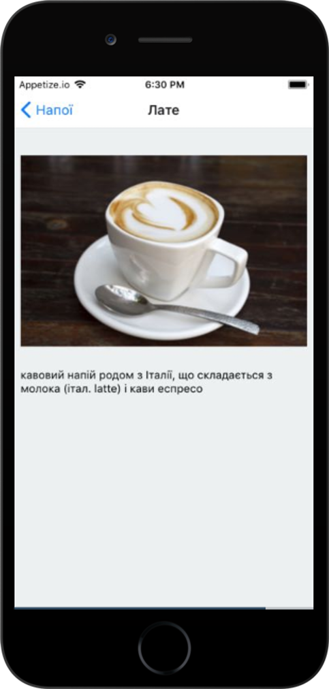
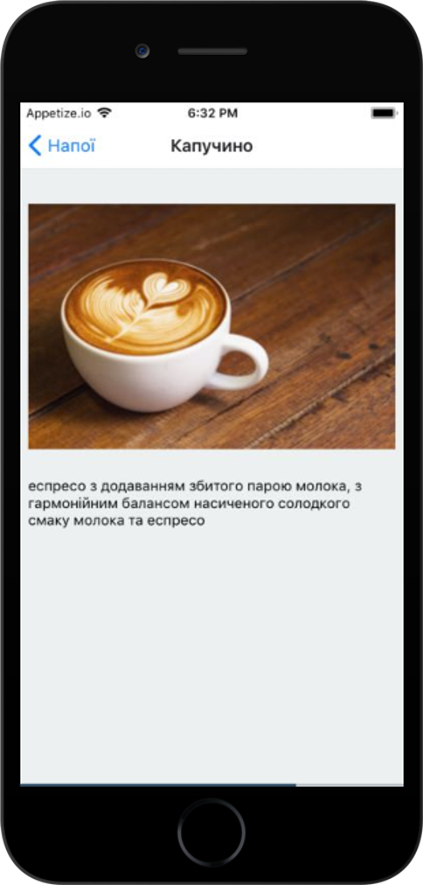
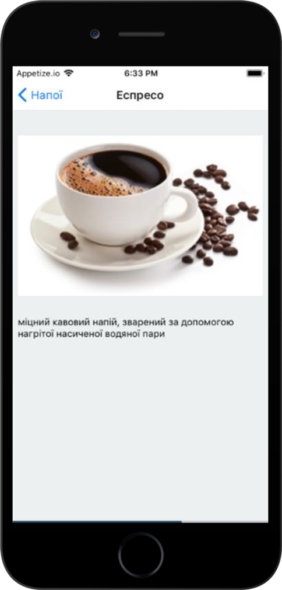

При запуску програми користувач бачить активність верхнього рівня – головну точку входу додатка. Ця активність включає зображення логотипу і навігаційний список з командами для отримання інформації про напої, їжу і кав'ярні.
Коли користувач клацає на одному з пунктів списку, додаток використовує його вибір для переходу до іншої активності. Наприклад, якщо користувач клацнув на команді Напої, додаток запускає активність категорій зі списком напоїв.
Ця активність відкривається при виборі користувачем команди Напої в навігаційному списку активності верхнього
рівня.
Активність виводить список всіх напоїв, що продаються в кав'ярнях. Користувач вибирає один з напоїв, щоб
отримати
більш детальну інформацію
про нього.
Активність для виведення докладної інформації про напій запускається тоді, коли користувач клацає на одному з напоїв, перерахованих в активності категорії напоїв.
Активність виводить детальну інформацію про напій, обраному користувачем: ім'я, фотографія та опис.
  
Це початковий опис. Дані про продукти мають зберігатися в базі даних. Також окремо має бути сторінка адміністратора, з якої можна додавати нові продукти, змінювати та видаляти продукти